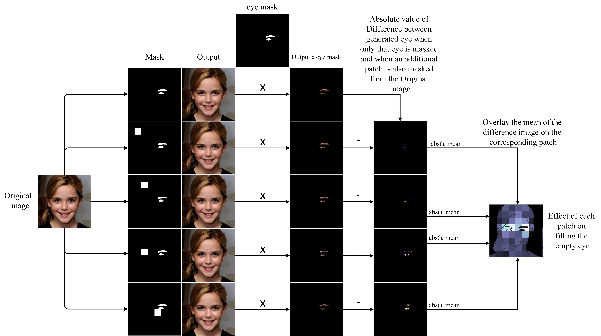
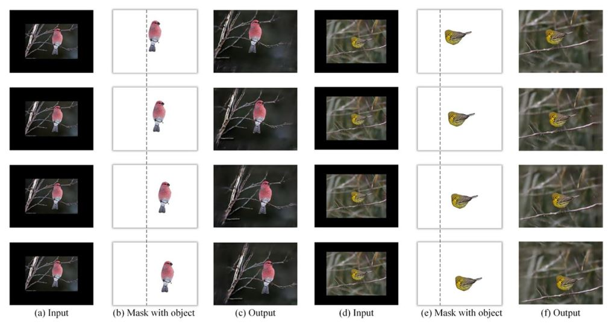
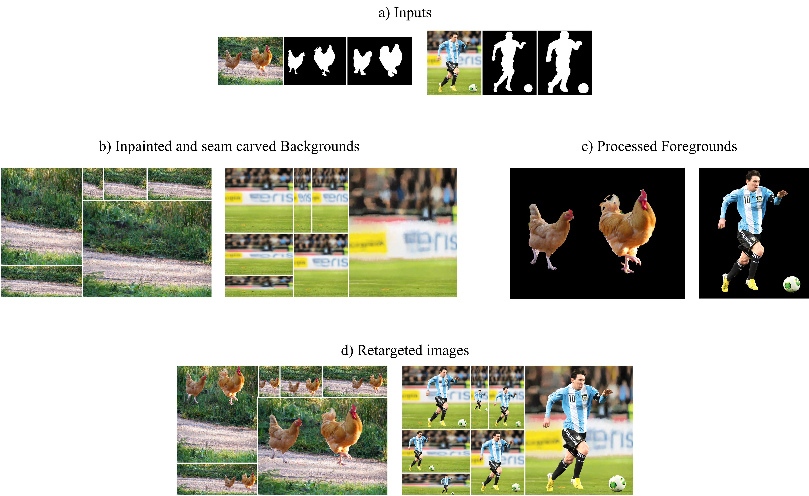
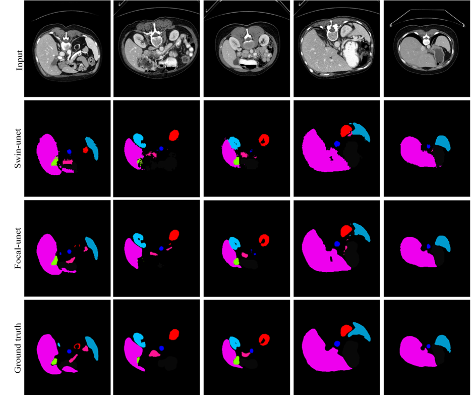
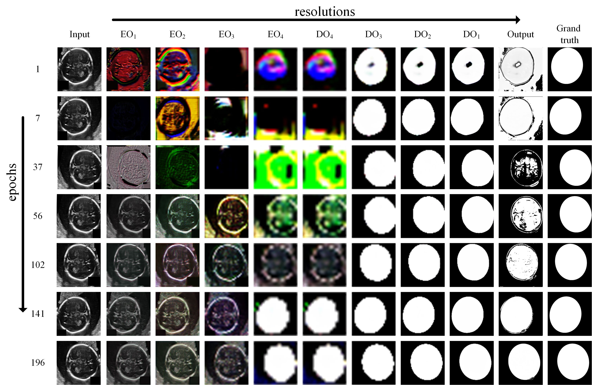

AUG 30, 2024
A proficient AI developer, I recently earned my master's degree in System
Telecommunication Engineering from Isfahan University of Technology,
Specializing in Computer Vision specifically Generative Adversarial Networks (GANs) and Vision Transformers.
.jpg)

Symmetric face inpainting with swin transformer by distinctly learning face components distributions. We also proposed a new method to measure the symmetry of the inpainted face, which we addressed it as Symmetry Concentration Score

Supervised deep learning for content-aware image retargeting with fourier convolutions. In this project we modified a large dataset to propose a new approach to solve image retargeting problem

Aesthetic-aware image retargeting based on foreground–background separation and PSO optimization. In this project we combined meta-huristic algorithms with deep learning abilities to propose a new image retargeting method.

Medical image segmentation by injecting noise to cGAN for modeling input and target domain joint distributions with limited training data.

We proposed a new UNet-like architecture using newly introduced Focal madule to surpase the segmentation abbility of the simmilar models.

Color image segmentation using multi-objective swarm optimizer and multi-level histogram thresholding.

Multi-Scale Gradients Dual Discriminator Conditional Generative Adversarial Network. In this work, we expand the features of MSGGAN to the conditional GAN. It results in a more supervised learning approach for this architecture, which results in better overall performance.